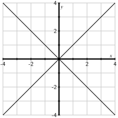

Each of these can be interpreted as vector and matrix operations, and doing so can help us gain some additional insights.
Throughout this section we will use the typical convention of letting \(n\) be the number of cases or subjects in a data set and representing a data set with \(n\) cases or subjects and \(p\) variables as an \(n \by p\) matrix. This arrangment is sometimes called column-variate form because the variables are in columns. This is by far the more common way to represent data as a matrix in data science, but you may also encounter matrices in row-variate form. A row-variate matrix is just the transpose of a column-variate matrix: Cases are in the columns, variables in the rows.
Subsection7.1.1Sample mean
If we re-express the sample mean using s a sum of products
It is often convenient to work with demeaned data, also called deviation scores. We obtained a demeaned vector by subtracting the mean from each entry in the vector.
\begin{align*}
P \amp = \frac{\onevec \onevec^{\transpose}}{n}\\
Q \amp = I - P \text{.}
\end{align*}
What is the shape of the matrix \(P\) and what the entries in \(P\text{?}\)
What are the entries in the matrix \(Q\text{?}\) Is \(Q\) symmetric?
Show that \(P^2 = P\text{.}\) Such a matrix is called idempotent. Why must an idempotent matrix be square?
Show that if \(A\) is idempotent, then \(I - A\) is also idempotent. This implies that \(Q\) is also idempotent. What does that fact that \(Q\) is idempotent tell you about the demeaning operation?
\begin{equation*}
(I - A)(I-A)
= I^2 - IA - AI + A^2
= I - A - A + A
= I - A\text{.}
\end{equation*}
Since \(Q = I - P\text{,}\)\(Q\) is idempontent. This means that \(\widetilde{\left( \xtilde \right)} = \xtilde\text{.}\) That is, demeaning an alredy demeaned vector doesn’t change it.
If \(i \neq j\text{,}\) then \(Q_{i \cdot} \cdot Q_{j \cdot}
= 2 \frac{n-1}{n} \frac{-1}{n} + (n-2) \frac{-1}{n} \frac{-1}{n}
= \frac{2 (1-n)}{n^2} + \frac{n-2}{n^2}
= \frac{2 - 2n + n - 2}{n^2} = \frac{-1}{n} \neq 0
\text{,}\) so the columns of \(Q\) are not quite orthogonal. (They are pretty close to orthogonal when \(n\) is large.)
No. The columns are not orthogonal. The columns are also not unit vectors. So this is an instance where we are using the letter \(Q\) but the matrix is not orthogonal.
Example7.1.1.
If \(n = 4\text{,}\) then matrix \(Q = \begin{bmatrix}
3/4 \amp -1/4 \amp -1/4 \amp -1/4 \\
-1/4 \amp 3/4 \amp -1/4 \amp -1/4 \\
-1/4 \amp -1/4 \amp 3/4 \amp -1/4 \\
-1/4 \amp -1/4 \amp -1/4 \amp 3/4 \\
\end{bmatrix}\) perfoms the demeaning operation. For example, let’s have Python compute
\begin{equation*}
Q \fourvec2105
\end{equation*}
Note7.1.2.
While expressing \(\xvec - \xbar\) as \(Q \xvec\) is useful to helping us understand the demaining operation, this would not be a good way to compute \(\xvec - \xbar\text{.}\) The matrix \(Q\) could be very large and only contains two different values, so there are more effiicent ways to perform this calculation on large data.
Not only is \(Q \xvec = \xtilde\) for any vector \(\xvec\text{,}\) we can apply \(Q\) to an entire data matrix (in column-variate form) to get
Here we are using the handy notation \(X_{\cdot j}\) to represent the \(i\)th column of \(X\text{.}\) We can use \(X_{i \cdot}\) to represent the \(i\)th row of \(X\text{.}\)
Subsection7.1.2Sample variance and covariance
Now let’s turn our attention to the sample variance (and then to covariance). Once again, we can write a sum of products as a dot product and re-express the dot product as as matrix multiplication.
\(s_{x}^2 = s_{xx}\text{,}\) so the variance of a vector is the covariance of that vector with itself. That is, variance is a special case of covariance.
Given a column-variate data matrix \(X\text{,}\) we can compute all the covariances simultaneously as a matrix operation:
The resulting matrix \(S\) (sometimes denoted \(\hat \Sigma\)) is called the variance-covariance matrix or simply the covariance matrix (since the variance is a covariance). \(S_{XY} = \frac{1}{n-1} X^{\transpose} Q Y\) can be defined similarly to compute the covariances of each column of \(X\) with each column of \(Y\text{,}\) assuming both matrices have the same number of rows.
Activity7.1.3.
Supose we have an \(n \by p\) column-variate data matrix \(X\) and wish to compute a new column (variable) \(\yvec\) that is a linear combination of the columns in \(X\text{.}\) That is \(\yvec = X \bvec\) for some \(p\)-dimensional vector \(b\text{.}\)
Show that \(\ytilde = \Xtilde \bvec\text{.}\)
Why is \(s_y^2 = s_{\tilde{y}}^2\text{?}\)
Show that \(s_{y}^2 = \bvec^{\transpose} S_{XX} \bvec\text{.}\)
\(S_{XX} = (QX)^{\transpose} (QX) \text{,}\) so \(S_{XX}\) is symmtric by Proposition 6.2.12.
Proposition 7.1.4 tells us that we can compute the variance of a linear combination of vectors directly from the covariance matrix for those vectors and the weights used in the linear combination.
Example7.1.5.
Suppose \(\zvec = \xvec - \yvec\) and the covariance matrix for \(\xvec\) and \(\yvec\) is
So far, we have taken a very algebraic approach. And linear algebra does make it easy to work with means and (co)variances and to learn about them. But it can be good to visualize these things as well.
Activity7.1.5.
We’ll begin with a very small, artificial data set. This data set has three subjects. For each subject, two measurements are recorded. We can gather all of these data into a \(3\by2\) matrix
\(X_{i \cdot}\text{,}\) the \(i\)th row of \(X\) represents the \(i\)th case or subject. \(X_{\cdot j}\text{,}\) the \(j\)th column of \(X\) represents the \(j\)th variable.
It is typical to plot the rows of \(X\) (columns of \(X^{\transpose}\)) as a scatter plot in case space. For each case -- i.e., for each row of \(X\) -- plot the \(x\) and \(y\) values as a dot in Figure 7.1.6.
Figure7.1.6.Plot the data and their centroid here.
If we compute the mean of each column we get another row vector called the centroid or mean. We will denote it as \(\overline{X} = \begin{bmatrix} \overline{x} \amp \overline{y}\end{bmatrix}\text{.}\) Note that we can write this as
In Python, we would calculate this as X.mean(axis = 0).
Compute the centroid and add it as another dot in Figure 7.1.6.
Notice that the centroid lies in the center of the data so we can measure the spread of the entire data set by measuring by how far away the points are from the centroid. To simplify our calculations, find the demeaned data
Plot the demeaned data and their centroid in Figure 7.1.7. Why is the centroid where it is?
Figure7.1.7.Plot the demeaned data and their centroid here.
Now that the data have been demeaned, we will define the total variance of \(X\) as the average of the squares of the distances of the dots in our plot from the origin; that is, the total variance is
\begin{equation*}
V = \frac 1n \sum_{i=1}^n |\Xtilde_{i\cdot}^{\transpose}|^2\text{.}
\end{equation*}
Find the total variance \(V\) for our set of three points.
To cut down on notation a bit, let’s define \(\dtil_i = \Xtilde_{i \cdot}\text{,}\) so
\begin{equation*}
V = \frac 1n \sum_{i=1}^n |\dtil|^2\text{.}
\end{equation*}
Notice that each \(\dtil_i\) is a column vector, but it is associated with a row of \(X\text{.}\) We will refer to these as the demeaned case vectors.
Write down \(\dtil_1, \dtil_2, \dtil_3\text{.}\)
Now plot the projections of the demeaned case vectors \(\dtil_1, \dtil_2, \dtil_3\) onto the \(x\) and \(y\) axes using Figure 7.1.8 and find the variances \(V_x\) and \(V_y\) of the projected points by computing the squares of the three distances and . adding them together.
Figure7.1.8.Plot the projections of the demeaned case vectors onto the \(x\) and \(y\) axes.
Which of the variances, \(V_x\) and \(V_y\text{,}\) is larger and how does the plot of the projected points explain your response?
What do you notice about the relationship between \(V\text{,}\)\(V_x\text{,}\) and \(V_y\text{?}\) How does the Pythagorean theorem explain this relationship?
Plot the projections of the demeaned case vectors onto the lines defined by vectors \(\vvec_1=\twovec11\) and \(\vvec_2=\twovec{-1}1\) using Figure 7.1.9 and find the variances \(V_{\vvec_1}\) and \(V_{\vvec_2}\) of these projected case vectors.

Figure7.1.9.Plot the projections of the deameaned case vectors onto the lines defined by \(\vvec_1\) and \(\vvec_2\text{.}\)
What is the relationship between the total variance \(V\) and \(V_{\vvec_1}\) and \(V_{\vvec_2}\text{?}\) How does the Pythagorean theorem explain your response?
Verify that you get the same results if you compute \(V_x\text{,}\)\(V_y\text{,}\)\(V_\vvec_1\text{,}\) and \(V_\vvec_2\) using Proposition 7.1.4
We find \(V_x = 2/2 = 1\) and \(V_y=3\text{.}\) Notice that \(V_y\) is larger because the points are more spread out in the vertical direction.
We have \(V=V_x+V_y\) due to the Pythagorean theorem.
The points projected onto the line defined by \(\vvec_1\) are \(\twovec{-1}{-1}\text{,}\)\(\twovec{-1/2}{-1/2}\text{,}\) and \(\twovec{3/2}{3/2}\text{.}\) This gives the variance \(V_{\vvec_1} = 7/2\text{.}\)
The points projected onto the line defined by \(\vvec_2\) are \(\twovec{0}{0}\text{,}\)\(\twovec{1/2}{-1/2}\text{,}\) and \(\twovec{-1/2}{1/2}\text{.}\) This gives the variance \(V_{\vvec_2} = 1/2\text{.}\)
Once again, \(V = V_{\vvec_1} + V_{\vvec_2}\) because of the Pythagorean theorem.
\(V_{\vvec_1}
= \twovec{\frac{1}{\sqrt 2}}{\frac{1}{\sqrt 2}} \cdot (S\twovec{\frac{1}{\sqrt 2}}{\frac{1}{\sqrt 2}} )
= 7/2
\text{.}\) The others can be checked similarly.
As Activity 7.1.5 suggests, the variance enjoys an additivity property. Consider, for instance, the situation where we have \(p=2\) variables measured for each of \(n\) cases, and suppose that the demeaned data are \(\Xtilde =\begin{bmatrix}\xtilde \amp \ytilde \end{bmatrix}\text{.}\) For the \(i\) row of \(X\) we get
More generally, suppose that we have an orthonormal basis \(\uvec_1\) and \(\uvec_2\text{.}\) If we project the demeaned points onto the line defined by \(\uvec_1\text{,}\) we obtain the points \((\dtil_j\cdot\uvec_1)\uvec_1\) so that
since \(\uvec_1\cdot\uvec_2 = 0\text{.}\) When we average over all the demeaned case vectors , we find that the total variance \(V\) is the sum of the variances in the \(\uvec_1\) and \(\uvec_2\) directions.
The restriction to two variables in this example was just for notational ease. The same reasoning works for any number of variables. This leads to the following proposition.
Proposition7.1.10.Additivity of Variance.
If \(W\) is a subspace with orthonormal basis \(\uvec_1,\uvec_2,\ldots, \uvec_n\text{,}\) then the variance of the points projected onto \(W\) is the sum of the variances in the \(\uvec_j\) directions:
\(\displaystyle V_{\uvec} = \uvec^{\transpose} S \uvec \)
\(\displaystyle V_{\uvec_1} = 38/10\)
\(V_{\uvec_2} = 2/10\text{.}\) Then \(V_{\uvec_1}+V_{\uvec_2} = 40/10 = 4\text{,}\) which is the total variance.
Our goal in the future will be to find directions \(\uvec\) where the variance is as large as possible and directions where it is as small as possible. The next activity demonstrates why this is useful.
Activity7.1.7.
Evaluating the following Python cell loads a dataset consisting of 100 demeaned data points and provides a plot of them. It also provides the demeaned data matrix \(A\text{.}\)
What is the shape of the covariance matrix \(S\text{?}\) Find \(S\) and verify your response.
By visually inspecting the data, determine which is larger, \(V_x\) or \(V_y\text{.}\) Then compute both of these quantities to verify your response.
What is the total variance \(V\text{?}\)
In approximately what direction is the variance greatest? Choose a reasonable vector \(\uvec\) that points in approximately that direction and find \(V_{\uvec}\text{.}\)
In approximately what direction is the variance smallest? Choose a reasonable vector \(\wvec\) that points in approximately that direction and find \(V_{\wvec}\text{.}\)
How are the directions \(\uvec\) and \(\wvec\) in the last two parts of this problem related to one another? Why does this relationship hold?
\(S\) will be the \(2\by2\) matrix \(S=\begin{bmatrix}
1.38 \amp 0.70 \\
0.70 \amp 0.37
\end{bmatrix}\)
\(V_x = 1.38\) and \(V_y=0.37\text{,}\) which agrees with the fact that the data is more spread out in the horizontal than vertical direction.
\(\displaystyle V=V_x+V_y=1.75\)
It looks like the direction \(\twovec21\) defined by the unit vector \(\uvec_1=\twovec{2/\sqrt{5}}{1/\sqrt{5}}\text{.}\) We find that \(V_{\uvec_1} = 1.74\text{,}\) which is almost all of the total variance.
It looks like the direction \(\twovec{-1}{2}\) defined by the unit vector \(\uvec_2=\twovec{-1/\sqrt{5}}{2/\sqrt{5}}\text{.}\) We find that \(V_{\uvec_2} = 0.01\text{.}\)
They are orthogonal to one another. Since the total variance \(V=V_{\uvec_1}+V_{\uvec_2}\) when \(\uvec_1\) and \(\uvec_2\) are orthogonal, \(V_{\uvec_1}\) will be as large as possible when \(V_{\uvec_2}\) is as small as possible.
This activity illustrates how variance can identify a line along which the data are concentrated. When the data primarily lie along a line defined by a vector \(\uvec_1\text{,}\) then the variance in that direction will be large while the variance in an orthogonal direction \(\uvec_2\) will be small.
Remember that variance is additive, according to Proposition 7.1.10, so that if \(\uvec_1\) and \(\uvec_2\) are orthogonal unit vectors, then the total variance is
\begin{equation*}
V = V_{\uvec_1} + V_{\uvec_2}.
\end{equation*}
Therefore, if we choose \(\uvec_1\) to be the direction where \(V_{\uvec_1}\) is a maximum, then \(V_{\uvec_2}\) will be a minimum.
In the next section, we will use an orthogonal diagonalization of the covariance matrix \(S\) to find the directions having the greatest and smallest variances. In this way, we will be able to determine when data are concentrated along a line or subspace.
Subsection7.1.3Summary
This section explored and variance and covariance. Let \(X\) be a column-variate data matrix and let \(\Xtilde\) be the demeaned version of \(X\text{.}\) Then
The variance of a vector is just a special case of covariance -- it is the covariance of a vector with itself.
Let \(\avec = \fourvec1326\) and let \(\bvec = \fourvec524{-3}\text{.}\) Compute \(\atilde \cdot \btilde\text{,}\)\(\avec \cdot \btilde\text{,}\) and \(\atilde \cdot \bvec\) and show that you get the same result each time.
Show that \(\avec \cdot \bvec\) gives a different result. (So it is important to demean at least one of the vectors.)
Show that for any vectors \(\xvec\) and \(\yvec\text{,}\)\(\xtilde \cdot \ytilde = \xvec \cdot \ytilde = \xtilde \cdot \yvec\text{.}\) So to form the dot product of two demeaned vectors, it suffices to demean one of them and not the other. (Hint: One way to do this begins by expressing things in terms of \(Q\) where \(\xtilde = Q \xvec\text{.}\))
2.
Suppose that you have a column-variate data matrix
Find the demeaned data matrix \(\Xtilde\) and plot the demeaned case vectors as points in Figure 7.1.11.
Figure7.1.11.A plot for the demeaned case vectors.
Construct the covariance matrix \(S\text{.}\)
Sketch the lines corresponding to the two eigenvectors on the plot above.
Find the variances in the directions of the eigenvectors.
4.
Suppose that \(S\) is the covariance matrix of a demeaned dataset.
Suppose that \(\uvec\) is an eigenvector of \(S\) with associated eigenvalue \(\lambda\) and that \(\uvec\) has unit length. Explain why \(V_{\uvec} = \lambda\text{.}\)
Suppose that the covariance matrix of a demeaned dataset can be written as \(S=QDQ^{\transpose}\) where
What is \(V_{\uvec_2}\text{?}\) What does this tell you about the demeaned data?
Explain why the total variance of a dataset equals the sum of the eigenvalues of the covariance matrix.
5.
Let \(S = \begin{bmatrix}
1 \amp 2 \amp -1 \\
2 \amp 3 \amp 0 \\
-1 \amp 0 \amp 4 \\
\end{bmatrix}\) be a covariance matrix for a column-variate data matrix \(X = \begin{bmatrix} \xvec_1 \amp \xvec_2 \amp \xvec_3 \end{bmatrix}\) with 125 rows.
What is the variance of each of the columns of \(X\text{?}\)
What is the variance of \(2 \xvec_1\text{?}\)
What is the variance of \(2 \xvec_1 + \xvec_3\text{?}\)
What is the variance of \(2 \xvec_1 - \xvec_3\text{?}\)
6.
In the expressions below \(a\) and \(b\) are scalars and \(\xvec_1\) and \(\xvec_2\) are vectors of the same dimension. Use Proposition 7.1.4 to derive formulas for the following in terms of \(\var(\xvec_1)\text{,}\)\(\var(\xvec_2)\text{,}\) and \(\cov(\xvec_1, \xvec_2)\text{.}\)
\(\var(a \xvec_1)\text{.}\)
\(\var(a \xvec_1 + b \xvec_2)\text{.}\)
\(\var(a \xvec_1 - b \xvec_2)\text{.}\)
7.
Identify each statement below as true or false and provide an explanation.
\(\var(\xvec_1 - \xvec_2)\) is always smaller than \(\var(\xvec_1 + \xvec_2)\text{.}\)
\(\var(\xvec_1 + \xvec_2)\) is always larger than \(\var(\xvec_1)\text{.}\)
8.
Show that the eigenvalues of a symmetric real-valued matrix are always real (i.e., they cannot be complex).
Hint: Suppose \(\lambda, \vvec\) is an eigenpair. Simplify \((A \vvec)^{\transpose} A \vvec\) and solve for \(\lambda\text{.}\)